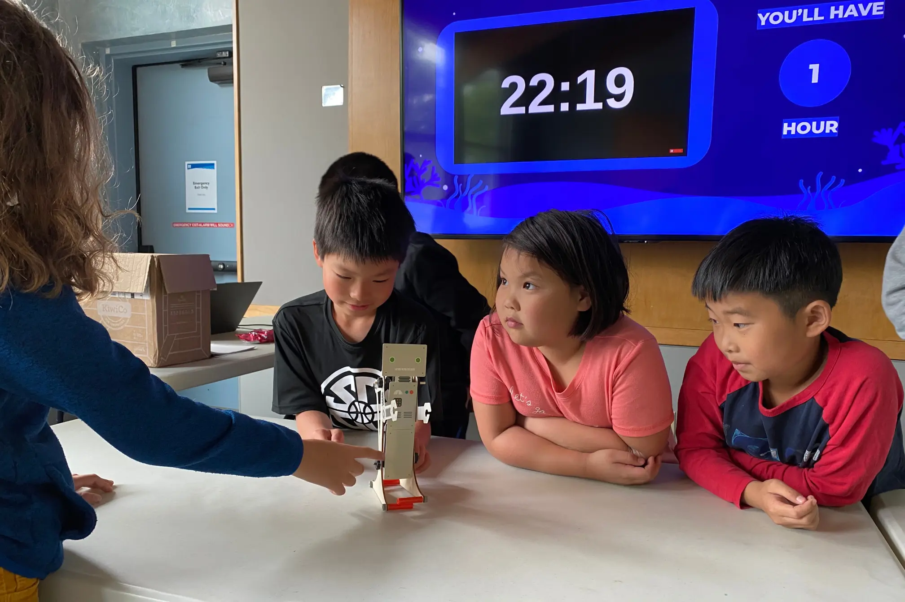

UpSTREAM teaches STREAM (Science, Technology, Robotics, Engineering, Arts, Mathematics) to Seattle students in grades 3–5,
working to bridge disproportionate access to STREAM opportunities.
UpSTREAM was founded by Seattle students with a drive to give back to their community. Since its
establishment, over 50 students from high schools across the city have volunteered for UpSTREAM.
Our instructors exceed rigorous standards that provide students with high quality learning experiences.
we take pride in fostering a curious, creative, and welcoming learning environment!

Choose UpSTREAM
Early exposure to STREAM helps students build lasting enthusiasm for the field.
UpSTREAM delivers engaging, hands-on opportunities that ignite curiosity in students wherever they learn.
Servicing over 1,000 students, UpSTREAM has worked with learners from every background.
No matter a student's experience with STREAM, we are committed to exceeding every student's expectations!